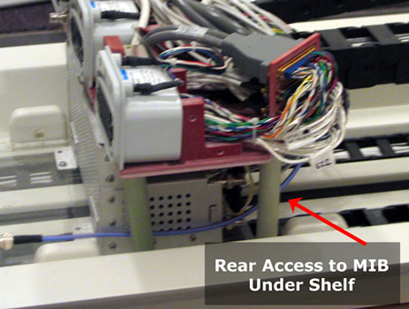
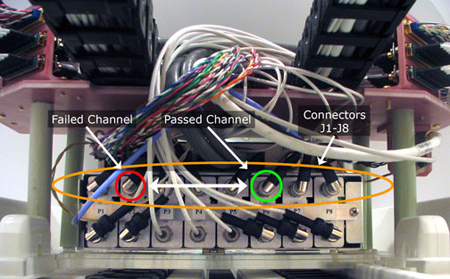
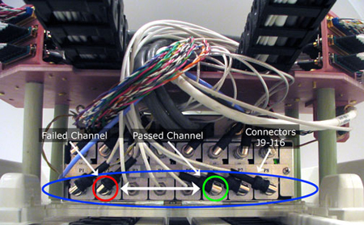
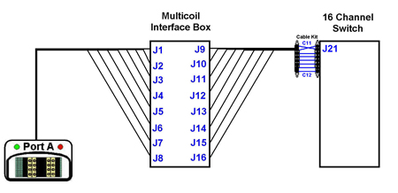
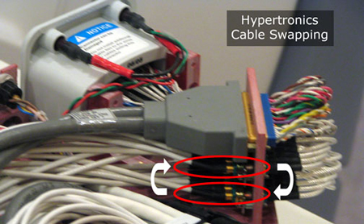
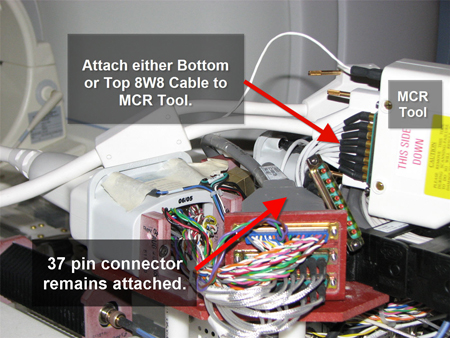
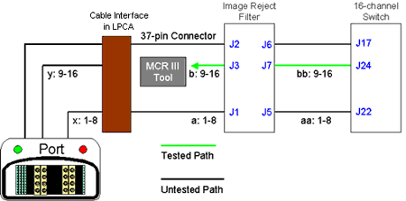
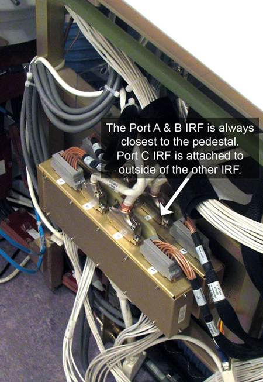
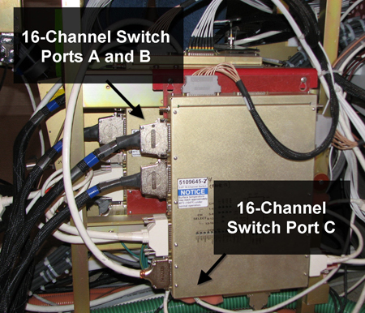

- 00000018WIA30A68E20GYZ
- id_131057753.0
- Aug 29, 2019 1:41:52 AM
MCR 3 Tool Troubleshooting
| Required persons | Preliminary requirements | Procedure | Finalization |
|---|---|---|---|
| 1 | Not Applicable | Not Applicable | Not Applicable |
| ||||
The MCR 3 tool and diagnostics apply to forward production HDx systems only. Use the MCR 2 Tool procedure for HDx upgrades.
Failures after Running Default Tests
- If errors are found after running the default tests (see MCR 3 Tool), use the
table below to determine a response.
Table 3. Default Test Troubleshooting Status Response Preamp Status (OFF) This test bypasses the preamps in the multicoil interface box (MIB). Excess Noise (OFF) This test bypasses the preamps in the MIB. Dead Channel (OFF) If Dead Channel (ON) validation for the same channel Passed, replace MIB. If Dead Channel (ON) validation for the same channel also Failed, see Isolating Port A Failures for fault isolation procedures. Low Signal (OFF) Run 16-Channel Switch OSC Test. Channel-Channel Variance (OFF) Review validation results. This test fails when channel values are not within set tolerances. Because tolerances are fairly loose, there is no way to objectively isolate the failure point/cause. In order to determine which channel may be problematic, view the channel output values in the test results and look for a value whose variance is dissimilar to the others. Preamp Failed (ON) Replace preamp board or MIB. Excess Noise (ON) Replace preamp board or MIB. Dead Channel (ON) If Dead Channel (OFF) validation for the same channel Passed, replace preamp or MIB. If Dead Channel (OFF) validation for the same channel also Failed, see Isolating Port A Failures for fault isolation procedures. Low Signal (ON) Run 16-Channel Switch OSC Test. Channel-Channel Variance (ON) Review validation results. This test fails when channel values are not within set tolerances. Because tolerances are fairly loose, there is no way to objectively isolate the failure point/cause. In order to determine which channel may be problematic, view the channel output values in the test results and look for a value whose variance is dissimilar to the others. Run port-specific test for port B. (See Using Port-Specific Tests to Isolate Port B and C Failures.) Run port-specific test for port C. (See Using Port-Specific Tests to Isolate Port B and C Failures.)
Isolating Port A Failures
Port A Dead Channel Failure: If the ON and OFF versions of the dead channel tests of any singular channel have opposite results (for example, the Dead Channel (OFF) test for Channel 2 fails, but the Dead Channel (ON) test for Channel 2 passes), swap the affected preamp or replace the MIB. If the dead channel tests for ON and OFF both failed, perform the following.
- On the back of the MIB, identify the cables from the channel
that failed the dead channel test and the cable from any channel that
passed the dead channel test.
Figure 1. MIB Rear Location 
- On the upper level, swap the passing channel with the failing
channel, and rerun the port A test.
Figure 2. MIB Channels 1-8 In (J1-8, Orange) 
If the problem moved to previously passing channel, replace the cable segment between port A and the MIB, and return cables to their original positions.
If the problem remains on the same channel, return cables to their original positions and proceed to 3.
- On the lower level, swap the passing channel with the failing
channel, and rerun the port A test.
Figure 3. MIB Channels 1-8 Out (J9-16, Blue) 
If the problem moved to the previously passing channel, replace the cable segment between the MIB and the 16-channel switch, and return cables to their original positions.
If the problem remains on the same channel, return cables to their original positions. Swap the MIB preamp board and repeat the test. Replace the preamp board or MIB.
If needed, the cable test kit can be used to isolate failures to either the cables in the cable track or the 16-channel switch.
Figure 4. Port A Isolation 
Using Port-Specific Tests to Isolate Port B and C Failures
The port-specific tests automatically run all the individual tests available in that port. Between each test, when prompted to change the positions of cables that run from the 16-channel switch to the cable interface in the LPCA, make the changes as instructed. After each test, the option to skip the remaining tests displays.
- Plug the MCR tool into either port B or C.
- Select the group of tests to be run, and click Run.

- Hypertronics Test (Ports B and C): This
test diagnoses the MCR chain path of channels 1-16 (or 17-32 on port
C) between the coil (MCR tool) and the 16-channel switch.
Figure 5. Hypertronics Test 
Click Run to start this test. All cables should remain in their original locations. Once this test is complete, proceed to the Hypertronics Cable Swap Test. Note the results, make the cable changes as instructed, and proceed.
Note:If this test passes, the MCR tool automatically skips the 8W8 Bottom Test. Either terminate MCR 3 Diagnostics, or test another port.
- Hypertronics Cable Swap Test (Ports B and C): This test diagnoses the MCR chain path of channels 1-8 (17-24 on
port C) between the coil (MCR tool) and the cable interface in LPCA
and channels 9-16 (25-32 on port C) between the cable interface in
the LPCA and the 16-channel switch. Leave the 37-pin connector on
the cable interface, because it provides power to the MCR tool.
Note:
This test will not run on 8-channel systems.
Figure 6. Hypertronics Cable Swap Test 
When the system is ready to perform this test, instructions display to swap the two lower cables on the cable interface in the LPCA. After this test is complete, proceed to the 8W8 Bottom Test. Note the results, make the cable changes as instructed, and proceed. If failures do not change, the problem is beyond the cables in the cable track. Leave the 37-pin connector on the cable interface, because it provides power to the MCR tool.
Figure 7. Location of Cable Swapping 
Note:If this test passes, the MCR tool automatically skips the 8W8 Top Test.
- 8W8 Bottom Test (Ports B and C): This
test diagnoses the MCR chain path of channels 1-8 (17-24 on port C)
from the cable interface in LPCA, though the image reject filter,
and to the 16-channel switch.
Figure 8. 8W8 Bottom Test 
When the system is ready to perform this test, instructions display to take the bottom 8-channel connector off the cable interface in the LPCA and connect it directly to the MCR tool. Leave the 37-pin connector on cable interface, because it provides power to MCR tool. After this test is complete, proceed to the 8W8 Top Test. Note the results, make the cable changes as instructed, and proceed. If failures do not change, problem is beyond the cable track.
Figure 9. MCR Tool Connect Location for 8W8 Cable 
- 8W8 Top Test (Ports B and C): This test
diagnosis the MCR chain path of channels 9-16 (25-32 on port C) from
the cable interface in the LPCA, through the image reject filter,
to the 16-channel switch.
Figure 10. 8W8 Top Test 
To perform this test, take the top 8-channel connector off the cable interface in the LPCA and connect it to the MCR tool. Leave the 37-pin connector on the cable interface, because it provides power to MCR tool. After this test is complete, note the results and install the cables in their original position.
- Hypertronics Test (Ports B and C): This
test diagnoses the MCR chain path of channels 1-16 (or 17-32 on port
C) between the coil (MCR tool) and the 16-channel switch.
Interpreting Port-Specific Test Results



Finalization
No finalization steps.